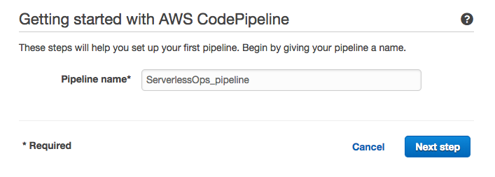
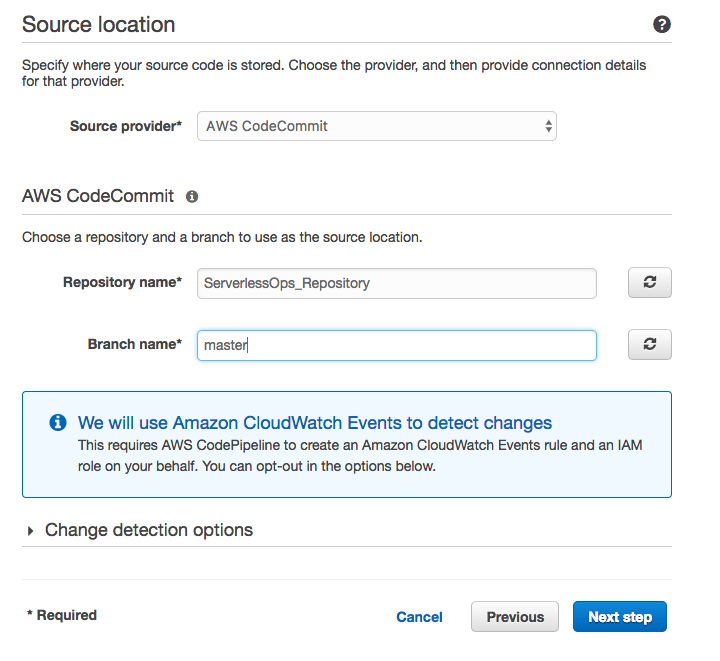
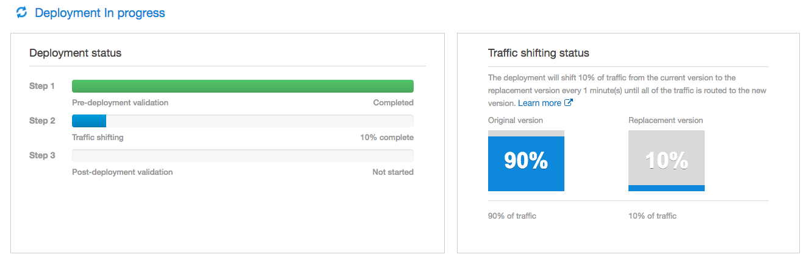
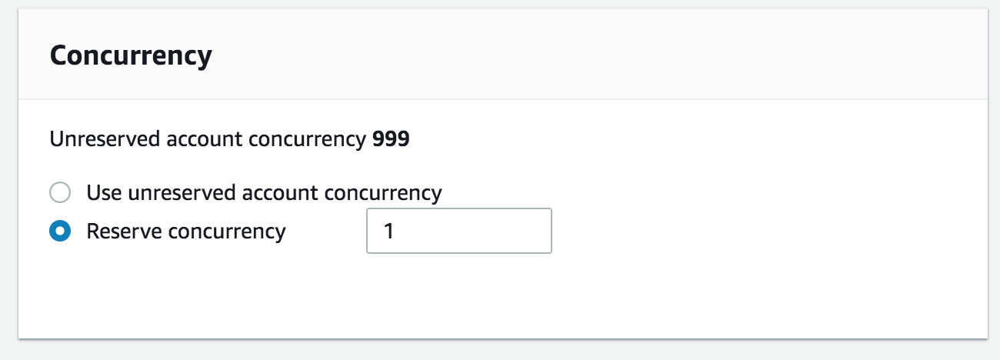

In this session you will learn the basis of Serverless and the starting set for every developer. We will go through all the steps from local development to continuous delivery using our favourite AWS Serverless Services.
Click here to toggle out this section
In this part of the presentation, if the customers know what is serverless, let's talk about their workloads. What are they doing/planning to do with Serverless?
Pysical Servers -> Virtual Machines -> Containers -> Serverless
Serverless computing allows you to build and run applications and services without thinking about servers. Serverless applications don't require you to provision, scale, and manage any servers. You can build them for virtually any type of application or backend service, and everything required to run and scale your application with high availability is handled for you.
Building serverless applications means that your developers can focus on their core product instead of worrying about managing and operating servers or runtimes, either in the cloud or on-premises. This reduced overhead lets developers reclaim time and energy that can be spent on developing great products which scale and that are reliable.
AWS Lambda is a compute service that lets you run code without provisioning or managing servers.
Key knowledge bulletpoints:
Amazon API Gateway is a fully managed service that makes it easy for developers to create, publish, maintain, monitor, and secure APIs at any scale.
SAM is an abstraction on CloudFormation
SAM makes easier to create applications!
sam validate - validates a Serverless SAM template sam package - aws cloudformation package sam deploy - aws cloudformation deploy
Let's start from the begining! Local development. SAM Local can be used to test functions locally, start a local API Gateway from a SAM template, validate a SAM template, and generate sample payloads for various event sources.
Invoking function with event file:
sam local invoke "Ratings" -e event.json
Generate sample event source payloads
sam local generate-event <service>
sam local generate-event "S3" | sam local invoke "Ratings"
Run API Gateway locally
sam local start-api
Debug your Lambda Set your configuration on Visual Studio Code:
{
"version": "0.2.0",
"configurations": [
{
"name": "Attach to SAM Local",
"type": "node",
"request": "attach",
"address": "localhost",
"port": 5858,
"localRoot": "${workspaceRoot}/(you-function)",
"remoteRoot": "/var/task"
}
]
}Invoke the Lamda to debug
sam local invoke -d 5858 <function logical id>
sam local start-api -d 5858Create an S3 bucket where your deployments are going to be uploaded. Use a name such as:
serverless-ops-my-deployments-<your-alias-here>Within the code, go to template.yaml and change the S3 bucket to the one you have just created.
git add -A
git commit -m "initial commit"
git pushNow your code is CodeCommit and you start building your pipeline.
The folder with the code has the following tree:
├── README.md
├── *buildspec.yml*
├── documentation
│ └── images
│ └── ...
├── frontend
│ ├── assets
│ │ └── ...
│ ├── front-js
│ │ ├── assets.js
│ │ └── ...
│ ├── *index.html*
│ └── ...
├── functions
│ ├── getinfo
│ │ └── *index.js*
│ └── getinfoenhanced
│ └── *index.js*
├── old
│ └── ...
├── swagger.yaml
└── *template.yaml*The important files here are represented by *name of the file *.
The SAM template is called template.yaml and has two resources: 1. An API 2. A function
The function has an API method defined in the API as the event trigger. This method is define in the file swagger.yaml as well as some other features such as CORS.
During this Lab we will modify the function getinfo
with the code within getinfoenhanced
to demonstrate how can propagate a change within the pipeline and deploy it in a Blue/Green matter.
Before you start, change the file buildspec.yml to add your alias in the command.


After defining our source, we will chose CodeBuild as our build provider. Click on Next Step.
Here we are going to select the build provider. In this case, we will use CodeBuild.
In the phase of creating a build project, we select Create a new build project
.
Within the project, the file buildspec.yml has the information necesary for your deployments. If we inspect this file, we will find that the deployment generages a file calles SAM-template.yaml which replaces the local code
with a file within the S3 bucket previously provided.

Click on Next Step once you have created your build project. Altough SAM (behind the scenes) will use CodeDeploy, SAM is based in CloudFormation and the deploy will do it as well.

The IAM role created by CodeBuild doesn't have the specific permissions for the instruction needed on it's buildspec.yml:
aws cloudformation package --template-file template.yaml --s3-bucket serverless-ops-my-deployments-<your-alias> --output-template-file SAM-template.yamlAfter creating the pipeline, you will see that it fails during the build phase due to a permissions issue. We need to add these permissions (S3).
CodeBuild Role:
{
"Version": "2012-10-17",
"Statement": [
{
"Effect": "Allow",
"Resource": [
"arn:aws:logs:us-east-1:012345678901:log-group:/aws/codebuild/from-sam-to-aws",
"arn:aws:logs:us-east-1:012345678901:log-group:/aws/codebuild/from-sam-to-aws:*"
],
"Action": [
"logs:CreateLogGroup",
"logs:CreateLogStream",
"logs:PutLogEvents"
]
},
{
"Effect": "Allow",
"Resource": [
"arn:aws:s3:::codepipeline-us-east-1-*"
],
"Action": [
"s3:PutObject",
"s3:GetObject",
"s3:GetObjectVersion"
]
},
{
"Effect": "Allow",
"Action": "s3:*",
"Resource": "arn:aws:s3::012345678901:nameofyourbucket"
},
{
"Effect": "Allow",
"Action": [
"ssm:GetParameters"
],
"Resource": "arn:aws:ssm:us-east-1:012345678901:parameter/CodeBuild/*"
}
]
}In order to make this web page available for every customer, we will have to upload it to S3.
The first step is to modify the javascript to point to the API created by your pipeline and the image to review.
Open the file under the project tree:
ServerlessOps > frontend > front-js > assets.jsChange the variable api with the URL copied before.
Change the bucket name and confirm the image. (the image should be in the same bucket as the front-end).
Now we should be able to open the application locally by opening the file:
ServerlessOps > frontend > index.htmlNow, let's upload this content to S3.
Create bucket called:
serverless-ops-frontend-<your-alias>Upload all the content within the folder frontend.
Configure your bucket for Website hosting by following these 3 simple steps in our documentation:
Now, go to your application and test it!
Let's make our first release. We could simply use a release change within the pipeline console but, in order to demonstrate the automation, we will do it directly from the console/git command:
Run the following git commands:
git add -A
git commit -m "My first commit! - ServerlessOps"
git pushGo back to the CodePipeline Console to see the release.
The code will stop at staging, yet the Pipeline won't have generated any resources such as APIs, Lambdas... Why? Because the Pipeline should have generated a ChangeSet. You can go to CloudFormation, select the stack and execute the change set.
A final stage should be added to the pipeline. ExecuteChangeSet is required.
Now, it's time to make a change. Our web application is clearly incomplete! We need to find out the celebrities in our photo!
To do this, we need to change the code behind this file:
functions/getinfo/index.jsWith the content within
functions/getinfoenhanced/index.jsAfter doing it, we need to commit these changes. Use the previously mentioned git commands to push the code to git commit:
git add -A
git commit -m "Adding celebrities to the result."
git pushNow that we have made a change on our code it should be reflected on the result. But wait... Does it? No! We are B/G deploying it! Follow these steps:
d-. Click it.

We are shifting traffic 10% each minute! This has been done using 3 lines on sam:
AutoPublishAlias: live
DeploymentPreference:
Type: Linear10PercentEvery1MinuteYou can run tests against the application to find see the different requests.
AWS Lambda limits your concurrency to 1000 concurrent executions within one region. Of course, these limits can be updated by requesting a limit increase to our support team. However, it is always a good idea to limit your functions to certain amount of concurrent executions.
Let's put an example: We have our own environment with several developers pushing code and testing lambda functions. We are deeply into Serverless! Some of these functions are just for testing purposes but one of our developers is doing a load test to see how does it react to heavy load. Because of this, his tesing lambda function is taking 900 concurrent executions letting only 100 left for the rest of your Lambda functions. Luckily, you followed the best practices and split testing and production in two different accounts so this is not impacting your production environment but, of course, the rest of the developers are seeing 429 in the Lambda execution whenever they trigger their functions. You got several angry developers! How can we avoid this?
Another use case would be to reserve
capacity for our Lambda function so other executions won't take it.
For the purpose of this workshop, we are going to limit the concurrency of our function to 25. You probably noticed in the code that there is wait
of 3000 seconds.
setTimeout(function(){...
},3000);This has been made on purpose to force your Lambda function to have concurrent executions.
Let's test our Lambda Function without concurrency. To do it, we recommend you to use an EC2 instance so you can install hey easily.
## If you don't have go installed:
sudo yum install go -y
## mac with brew
brew install go
##
go get -u github.com/rakyll/hey
./go/bin/hey -n 1000 -c 50 \
-d '{ "bucket": "serverless-ops-frontend-<your-alias-here>","key": "someguy.jpg"}' \
-H 'Content-Type: application/json' -m POST https://<your-api-endpoint>/Prod/getinfoAt this point, this code should have been released. Let's manually set the concurrency for our Lambda Function.
 4. Save the function.
It is important to understand that this concurrency is shared between all the aliases and versions of this function. Lambda concurrency is function based.
To test this concurrency, let's go to our terminal and run the previous command command.
./go/bin/hey -n 1000 -c 50 \
-d '{ "bucket": "serverless-ops-frontend-<your-alias-here>","key": "someguy.jpg"}' \
-H 'Content-Type: application/json' -m POST https://<your-api-endpoint>/Prod/getinfoYou will definitely see something like this:
Response time histogram:
0.083 [1] |
1.548 [500] |∎∎∎∎∎∎∎∎∎∎∎∎∎∎∎∎∎∎∎∎∎∎∎∎∎∎∎∎∎∎∎∎∎∎∎∎∎∎∎∎
3.012 [0] |
4.476 [457] |∎∎∎∎∎∎∎∎∎∎∎∎∎∎∎∎∎∎∎∎∎∎∎∎∎∎∎∎∎∎∎∎∎∎∎∎∎
5.941 [15] |∎
7.405 [5] |
8.869 [1] |
10.334 [0] |
11.798 [0] |
13.262 [3] |
14.727 [18] |∎
...
Status code distribution:
[502] 501 responses
[200] 499 responsesAs we can see here, the 502's responses has increased!